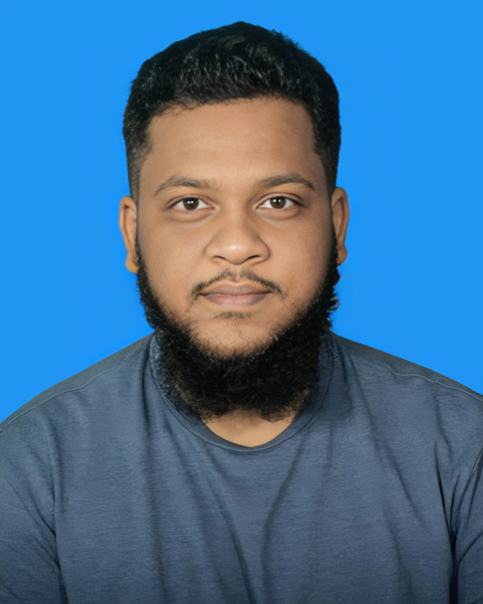

Fullstack Developer | Problem Solver
Email : shihabshahriar543@gmail.com
Phone : +8801744915011
Location : Dhaka, Bangladesh
I have a strong attraction on the IT sector , I enjoy most of my time learnig new technologies and love to implement those in real life . In my free time, I like to explore new programming languages and frameworks, and work on personal projects to enhance my skills.
Dhaka International University, 2022 – 2026
Nilphamari Government College, 2018 – 2020
Nilphamari Government High School, 2013 – 2018
Dhaka International University IEEE Club | March 2025 – Present
Dhaka International University Computer Programming Club | March 2025 – Present
A Sudoku game built using Java Swing, featuring a user-friendly interface and various difficulty levels. I designed the UI and implemented the game logic as it was individual project for my university Java Object Oriented Programming course.
See The Source CodeA automated Library Management System with database integration, featuring a user-friendly interface and admin panel. I designed the UI and implemented the backend logic using the Django framework as it was individual project for my university Database Management course.
See The Source CodeA website for the IEEE student branch at Dhaka International University, featuring event management, member registration, and resource sharing. I am responsible for the frontend and backend development both using HTML, CSS, JavaScript and python, as well as collaborating with other team members to improve UI/UX and security.
Source Code is not shared for security reasons